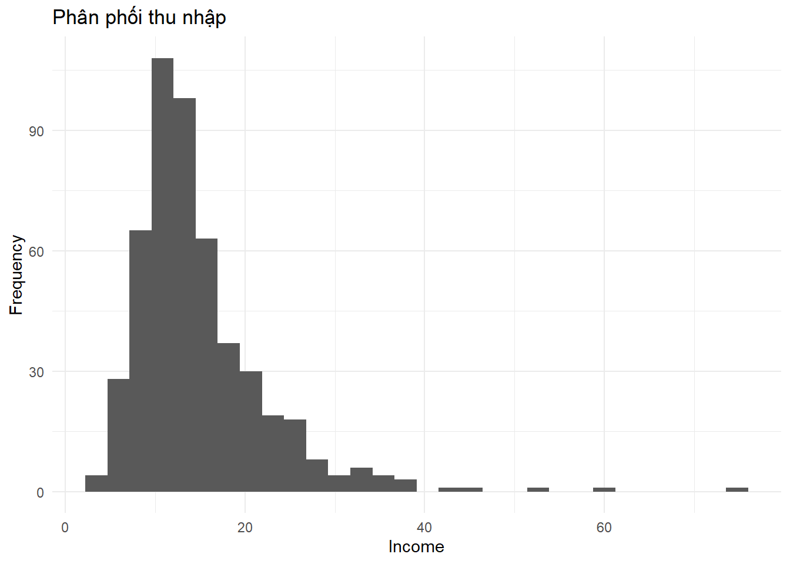
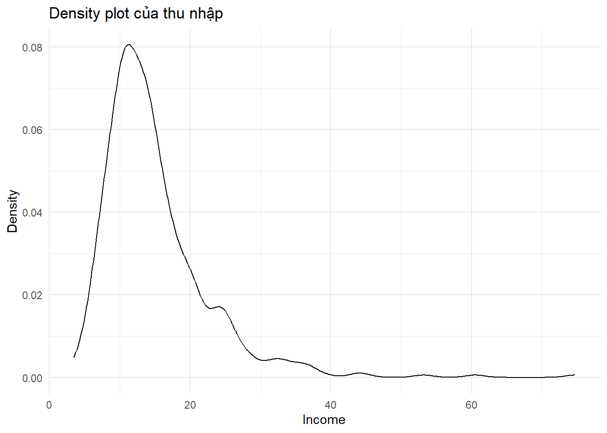
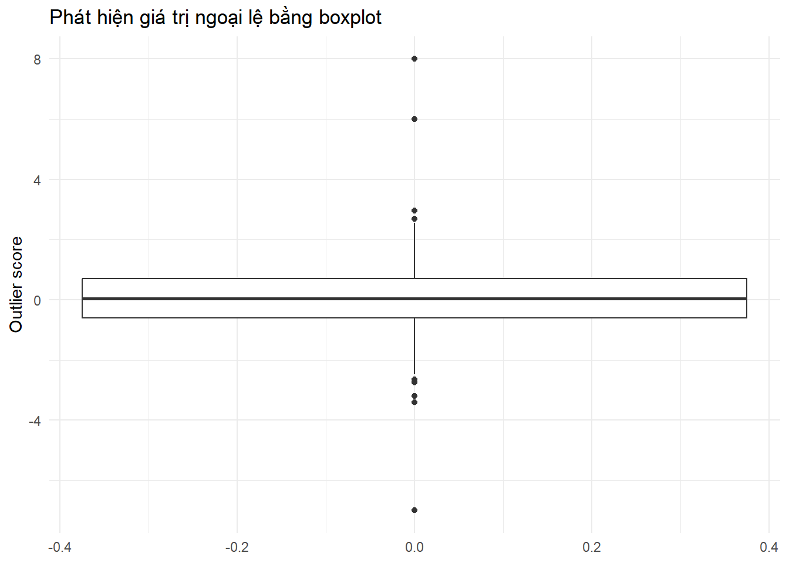
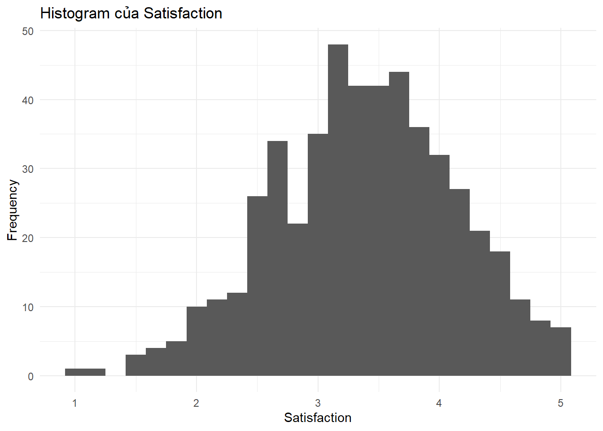
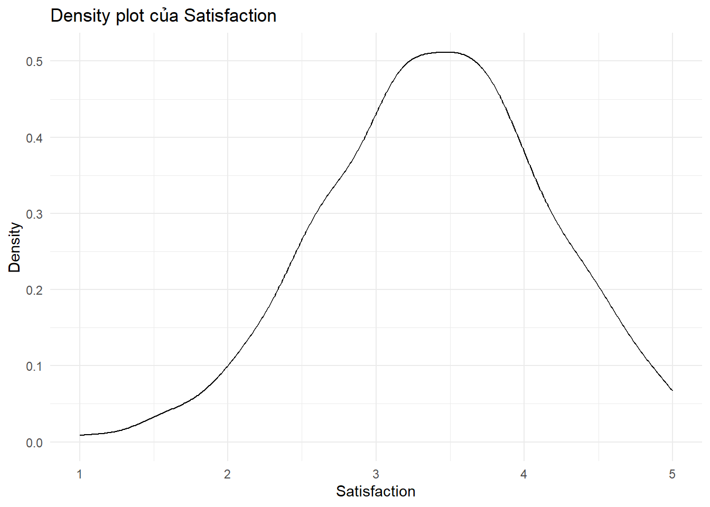
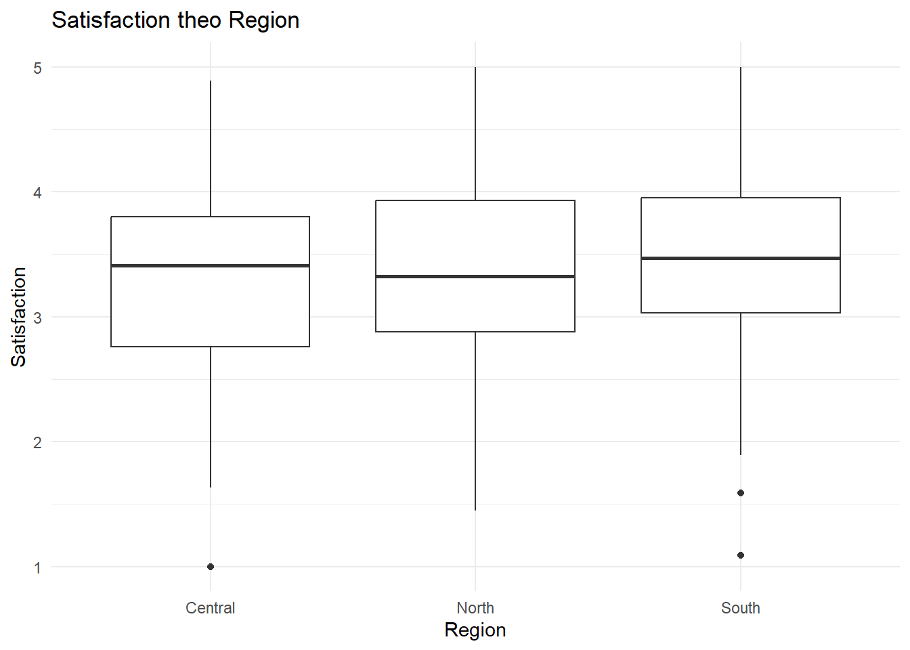
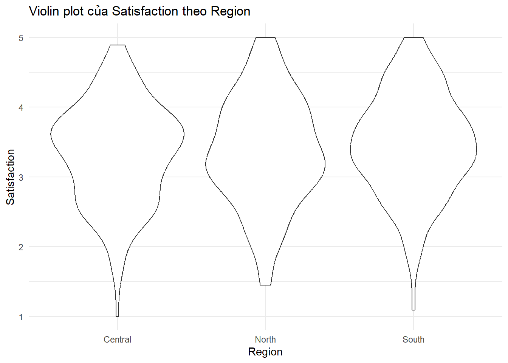
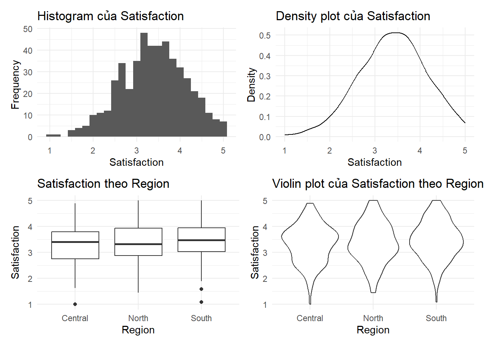

install.packages("tidyverse")
install.packages("readxl")
install.packages("janitor")
install.packages("moments")
install.packages("ineq")
install.packages("vegan")
install.packages("effectsize")
install.packages("gt")
install.packages("patchwork")Advanced 01. Thống kê Mô tả Nâng cao
Advanced Descriptive Statistics
Tổng quan bài học
TipKết quả học tập (Learning Outcomes)
Sau khi hoàn thành bài học này, học viên có thể:
- Hiểu thống kê mô tả nâng cao (Advanced Descriptive Statistics)
- Đánh giá chất lượng dữ liệu (Data Quality Assessment)
- Tính và diễn giải giá trị trung tâm (Central Tendency)
- Tính và diễn giải độ phân tán (Variability)
- Đánh giá hình dạng phân phối bằng độ lệch (Skewness) và độ nhọn (Kurtosis)
- Phát hiện giá trị ngoại lệ (Outliers)
- Tính khoảng tin cậy (Confidence Interval)
- Hiểu kích thước ảnh hưởng (Effect Size)
- Tạo báo cáo chẩn đoán mô tả (Descriptive Diagnostic Report)
- Trực quan hóa dữ liệu mô tả bằng
ggplot2 - Viết kết quả thống kê mô tả theo chuẩn học thuật
NoteLogic bài học (Module Logic)
Bài học này trả lời câu hỏi:
Làm thế nào để hiểu sâu một bộ dữ liệu trước khi chạy tương quan, hồi quy, SEM hoặc các mô hình nâng cao?
Quy trình:
Data Quality
↓
Central Tendency
↓
Variability
↓
Distribution Shape
↓
Outlier Detection
↓
Confidence Interval
↓
Effect Size
↓
Visualization
↓
Diagnostic Report
↓
Academic Reporting1. Vì sao cần thống kê mô tả nâng cao?
NoteKiến thức nền tảng (Knowledge Notes)
Là gì? (What?)
Thống kê mô tả nâng cao (Advanced Descriptive Statistics) là bước phân tích giúp nhà nghiên cứu hiểu sâu về dữ liệu, không chỉ dừng lại ở giá trị trung bình (Mean) và độ lệch chuẩn (Standard Deviation).
Tại sao cần? (Why?)
Nếu không hiểu dữ liệu, các phân tích sau có thể bị sai hoặc diễn giải sai:
- Tương quan (Correlation)
- Hồi quy (Regression)
- SEM
- Machine Learning
- Bayesian Analysis
Khi nào dùng? (When?)
Luôn thực hiện sau khi làm sạch dữ liệu và trước khi chạy các mô hình thống kê.
Thực hiện thế nào? (How?)
Ta kiểm tra:
- Chất lượng dữ liệu
- Phân phối
- Giá trị ngoại lệ
- Khoảng tin cậy
- Kích thước ảnh hưởng
- Biểu đồ mô tả
ImportantỨng dụng trong nghiên cứu (Research Application)
Thống kê mô tả nâng cao thường được dùng trong:
- Phần mô tả mẫu nghiên cứu (Sample Characteristics)
- Phân tích sơ bộ (Preliminary Analysis)
- Kiểm tra dữ liệu trước hồi quy
- Kiểm tra dữ liệu trước SEM
- Báo cáo khảo sát
- Báo cáo nghiên cứu định lượng
- Luận văn, luận án và bài báo khoa học
WarningSai lầm thường gặp (Common Mistakes)
Người học thường mắc lỗi:
- Chỉ báo cáo Mean và SD
- Không kiểm tra dữ liệu thiếu
- Không kiểm tra phân phối
- Không kiểm tra outliers
- Diễn giải p-value mà không báo cáo effect size
- Không mô tả rõ biến nào bị lệch hoặc có giá trị bất thường
2. Chuẩn bị dữ liệu
NoteKiến thức nền tảng (Knowledge Notes)
Là gì? (What?)
Bước này nhập dữ liệu từ workbook Advanced Analytics.
Dữ liệu sử dụng
data/advance/module7_advanced_data.xlsxSheet sử dụng:
01_Advanced_DescriptiveLưu ý
Nếu thư mục của bạn tên là advanced thay vì advance, đoạn code bên dưới có sẵn cơ chế fallback.
Cài đặt package
Nạp package
library(tidyverse)
library(readxl)
library(janitor)
library(gt)
library(patchwork)Thiết lập đường dẫn dữ liệu
advanced_file <- if (file.exists("../data/advance/module7_advanced_data.xlsx")) {
"../data/advance/module7_advanced_data.xlsx"
} else if (file.exists("../data/advanced/module7_advanced_data.xlsx")) {
"../data/advanced/module7_advanced_data.xlsx"
} else if (file.exists("data/advance/module7_advanced_data.xlsx")) {
"data/advance/module7_advanced_data.xlsx"
} else {
"data/advanced/module7_advanced_data.xlsx"
}Nhập dữ liệu
adv_desc <- read_excel(
advanced_file,
sheet = "01_Advanced_Descriptive"
) |>
clean_names()Kiểm tra dữ liệu
glimpse(adv_desc)Rows: 500
Columns: 19
$ id <chr> "ADV0001", "ADV0002", "ADV0003", "ADV0004", "ADV000…
$ region <chr> "North", "North", "South", "Central", "Central", "N…
$ school <chr> "School_5", "School_3", "School_10", "School_1", "S…
$ gender <chr> "Male", "Male", "Female", "Female", "Female", "Male…
$ age <dbl> 32, 32, 23, 40, 42, 29, 20, 47, 22, 27, 32, 28, 40,…
$ income_million_vnd <dbl> 10.88, 28.33, 14.17, 13.52, 13.83, 11.83, 12.99, 13…
$ gpa <dbl> 2.65, 2.91, 2.94, 2.99, 2.82, 2.34, 3.31, 3.57, 3.8…
$ satisfaction <dbl> 3.26, 3.25, 2.61, 4.01, 4.88, 4.85, 2.15, 2.05, 4.1…
$ hospital_cost <dbl> 7.84, 43.03, 8.03, 23.80, 47.09, 6.94, 69.79, 16.22…
$ wait_time_min <dbl> 30.2, 40.4, 7.6, 31.9, 19.8, 19.3, 15.0, 22.9, 11.2…
$ claims_count <dbl> 3, 6, 0, 3, 5, 4, 4, 2, 2, 7, 7, 4, 2, 1, 3, 2, 4, …
$ diagnosis_group <chr> "Low risk", "Low risk", "Low risk", "Medium risk", …
$ event <dbl> 1, 0, 0, 1, 0, 0, 1, 0, 1, 0, 1, 0, 0, 0, 0, 0, 0, …
$ time_to_event_days <dbl> 178, 249, 336, 20, 199, 344, 20, 152, 232, 193, 18,…
$ missing_score <dbl> 49.01, 45.18, 34.14, 40.35, 65.08, 45.21, 34.78, 55…
$ outlier_score <dbl> 0.08, 0.92, 1.13, 0.77, 0.26, 0.33, -0.13, -0.21, 1…
$ weight_kg <dbl> 61.5, 63.4, 75.2, 73.0, 60.1, 73.9, 59.4, 71.5, 64.…
$ height_cm <dbl> 161.3, 155.5, 166.1, 165.6, 165.9, 163.5, 168.1, 15…
$ date <chr> "2026-01-12", "2026-06-25", "2026-06-10", "2026-01-…dim(adv_desc)[1] 500 19names(adv_desc) [1] "id" "region" "school"
[4] "gender" "age" "income_million_vnd"
[7] "gpa" "satisfaction" "hospital_cost"
[10] "wait_time_min" "claims_count" "diagnosis_group"
[13] "event" "time_to_event_days" "missing_score"
[16] "outlier_score" "weight_kg" "height_cm"
[19] "date" 3. Đánh giá chất lượng dữ liệu (Data Quality Assessment)
TipKết quả học tập (Learning Outcomes)
Sau phần này, học viên có thể:
- Kiểm tra số dòng và số cột
- Kiểm tra dữ liệu thiếu (Missing Values)
- Kiểm tra kiểu dữ liệu
- Tạo bảng đánh giá chất lượng dữ liệu ban đầu
NoteKiến thức nền tảng (Knowledge Notes)
Là gì? (What?)
Đánh giá chất lượng dữ liệu là bước kiểm tra dữ liệu có đủ tốt để phân tích hay không.
Tại sao cần? (Why?)
Dữ liệu có thể chứa:
- Dữ liệu thiếu
- Kiểu dữ liệu sai
- Giá trị bất thường
- Giá trị không hợp lệ
- Quan sát trùng lặp
Khi nào dùng? (When?)
Luôn dùng ngay sau khi nhập dữ liệu.
Thực hiện thế nào? (How?)
Dùng các hàm:
dim()
glimpse()
summary()
is.na()
colSums()Kích thước dữ liệu
n_observations <- nrow(adv_desc)
n_variables <- ncol(adv_desc)
tibble(
indicator = c("Number of observations", "Number of variables"),
value = c(n_observations, n_variables)
)Kiểm tra dữ liệu thiếu
missing_report <- adv_desc |>
summarise(
across(
everything(),
~ sum(is.na(.))
)
) |>
pivot_longer(
cols = everything(),
names_to = "variable",
values_to = "missing_n"
) |>
mutate(
missing_pct = round(missing_n / nrow(adv_desc) * 100, 2)
) |>
arrange(desc(missing_n))
missing_reportCác biến có dữ liệu thiếu
missing_report |>
filter(missing_n > 0)Kiểm tra kiểu dữ liệu
type_report <- tibble(
variable = names(adv_desc),
class = map_chr(adv_desc, ~ class(.x)[1])
)
type_report
ImportantỨng dụng trong nghiên cứu (Research Application)
Trong một bài báo, bước đánh giá chất lượng dữ liệu thường không trình bày quá dài, nhưng cần được thực hiện trước khi phân tích chính.
Nếu tỷ lệ dữ liệu thiếu cao, cần báo cáo cách xử lý dữ liệu thiếu trong phần phương pháp (Methods).
WarningSai lầm thường gặp (Common Mistakes)
Không nên xóa toàn bộ quan sát có NA ngay lập tức.
Trước khi xử lý dữ liệu thiếu, cần hỏi:
- Biến nào bị thiếu?
- Thiếu bao nhiêu phần trăm?
- Thiếu ngẫu nhiên hay có hệ thống?
- Biến đó có quan trọng cho mô hình nghiên cứu không?
- Dữ liệu tốt là nền tảng cho phân tích đáng tin cậy.
- Kiểm tra missing values trước khi phân tích.
- Kiểm tra kiểu dữ liệu trước khi tính toán.
- Không nên chạy mô hình nếu chưa hiểu chất lượng dữ liệu.
4. Giá trị trung tâm và độ phân tán
TipKết quả học tập (Learning Outcomes)
Sau phần này, học viên có thể:
- Tính giá trị trung bình (Mean)
- Tính trung vị (Median)
- Tính độ lệch chuẩn (Standard Deviation)
- Tính khoảng tứ phân vị (Interquartile Range)
- Biết khi nào nên dùng Mean và khi nào nên dùng Median
NoteKiến thức nền tảng (Knowledge Notes)
Là gì? (What?)
Giá trị trung tâm (Central Tendency) cho biết dữ liệu tập trung ở đâu.
Độ phân tán (Variability) cho biết dữ liệu phân tán rộng hay hẹp.
Chỉ số phổ biến
| Nhóm chỉ số | Thuật ngữ | Ý nghĩa |
|---|---|---|
| Trung tâm | Mean | Giá trị trung bình |
| Trung tâm | Median | Giá trị nằm giữa |
| Trung tâm | Mode | Giá trị xuất hiện nhiều nhất |
| Phân tán | SD | Độ lệch chuẩn |
| Phân tán | Variance | Phương sai |
| Phân tán | IQR | Khoảng giữa 50% dữ liệu |
| Phân tán | Range | Max - Min |
Khi nào dùng? (When?)
- Dữ liệu phân phối gần chuẩn: Mean và SD
- Dữ liệu lệch mạnh: Median và IQR
- Dữ liệu có outliers: Median thường ổn định hơn Mean
Tóm tắt biến chính
central_variability_report <- adv_desc |>
summarise(
age_mean = mean(age, na.rm = TRUE),
age_median = median(age, na.rm = TRUE),
age_sd = sd(age, na.rm = TRUE),
age_iqr = IQR(age, na.rm = TRUE),
income_mean = mean(income_million_vnd, na.rm = TRUE),
income_median = median(income_million_vnd, na.rm = TRUE),
income_sd = sd(income_million_vnd, na.rm = TRUE),
income_iqr = IQR(income_million_vnd, na.rm = TRUE),
satisfaction_mean = mean(satisfaction, na.rm = TRUE),
satisfaction_median = median(satisfaction, na.rm = TRUE),
satisfaction_sd = sd(satisfaction, na.rm = TRUE),
satisfaction_iqr = IQR(satisfaction, na.rm = TRUE)
)
central_variability_reportTóm tắt theo nhóm
adv_desc |>
group_by(region) |>
summarise(
n = n(),
mean_satisfaction = mean(satisfaction, na.rm = TRUE),
sd_satisfaction = sd(satisfaction, na.rm = TRUE),
median_satisfaction = median(satisfaction, na.rm = TRUE),
iqr_satisfaction = IQR(satisfaction, na.rm = TRUE),
.groups = "drop"
)
ImportantỨng dụng trong nghiên cứu (Research Application)
Trong phần mô tả mẫu, ta thường viết:
The mean satisfaction score was 3.42 (SD = 0.78).Nếu dữ liệu lệch mạnh, nên viết:
The median income was 18.5 million VND (IQR = 10.2).
WarningSai lầm thường gặp (Common Mistakes)
Không nên chỉ báo cáo Mean nếu dữ liệu bị lệch mạnh hoặc có outliers.
Ví dụ:
Mean income = 35
Median income = 18Sự khác biệt lớn giữa Mean và Median có thể gợi ý phân phối lệch phải (right-skewed distribution).
- Mean nhạy với outliers.
- Median ổn định hơn khi dữ liệu lệch.
- SD phù hợp khi phân phối tương đối chuẩn.
- IQR phù hợp khi dữ liệu lệch hoặc có outliers.
5. Hình dạng phân phối: Độ lệch và độ nhọn
TipKết quả học tập (Learning Outcomes)
Sau phần này, học viên có thể:
- Hiểu độ lệch (Skewness)
- Hiểu độ nhọn (Kurtosis)
- Tính skewness và kurtosis bằng R
- Diễn giải phân phối lệch trái, lệch phải và phân phối có đuôi dày
- Quyết định có cần kiểm tra thêm bằng biểu đồ hay không
NoteKiến thức nền tảng (Knowledge Notes)
Độ lệch là gì? (What is Skewness?)
Độ lệch (Skewness) cho biết phân phối có đối xứng hay bị lệch sang một phía.
| Skewness | Diễn giải |
|---|---|
| Gần 0 | Gần đối xứng |
| > 0 | Lệch phải |
| < 0 | Lệch trái |
| > |1| | Lệch mạnh |
Độ nhọn là gì? (What is Kurtosis?)
Độ nhọn (Kurtosis) cho biết mức độ nhọn và độ dày của đuôi phân phối.
| Kurtosis | Diễn giải |
|---|---|
| Khoảng 3 | Gần phân phối chuẩn |
| > 3 | Đuôi dày hơn |
| < 3 | Đuôi mỏng hơn |
Khi nào dùng? (When?)
Dùng khi cần kiểm tra hình dạng phân phối trước khi chạy các kiểm định hoặc mô hình giả định phân phối gần chuẩn.
Tính độ lệch và độ nhọn
if (requireNamespace("moments", quietly = TRUE)) {
shape_report <- tibble(
variable = c(
"income_million_vnd",
"hospital_cost",
"wait_time_min",
"satisfaction",
"gpa"
),
skewness = c(
moments::skewness(adv_desc$income_million_vnd, na.rm = TRUE),
moments::skewness(adv_desc$hospital_cost, na.rm = TRUE),
moments::skewness(adv_desc$wait_time_min, na.rm = TRUE),
moments::skewness(adv_desc$satisfaction, na.rm = TRUE),
moments::skewness(adv_desc$gpa, na.rm = TRUE)
),
kurtosis = c(
moments::kurtosis(adv_desc$income_million_vnd, na.rm = TRUE),
moments::kurtosis(adv_desc$hospital_cost, na.rm = TRUE),
moments::kurtosis(adv_desc$wait_time_min, na.rm = TRUE),
moments::kurtosis(adv_desc$satisfaction, na.rm = TRUE),
moments::kurtosis(adv_desc$gpa, na.rm = TRUE)
)
)
shape_report
}Histogram kiểm tra phân phối
fig_income_hist <- ggplot(adv_desc, aes(x = income_million_vnd)) +
geom_histogram(bins = 30) +
labs(
title = "Phân phối thu nhập",
x = "Income",
y = "Frequency"
) +
theme_minimal()
fig_income_hist
Density plot
fig_income_density <- ggplot(adv_desc, aes(x = income_million_vnd)) +
geom_density() +
labs(
title = "Density plot của thu nhập",
x = "Income",
y = "Density"
) +
theme_minimal()
fig_income_density
ImportantQuyết định nghiên cứu (Research Decision)
Nếu một biến có độ lệch mạnh:
|Skewness| > 1nhà nghiên cứu nên cân nhắc:
- Kiểm tra biểu đồ
- Báo cáo Median và IQR
- Dùng phương pháp robust
- Dùng biến đổi log nếu phù hợp
- Dùng kiểm định phi tham số nếu cần
WarningSai lầm thường gặp (Common Mistakes)
Không nên chỉ nhìn skewness và kurtosis rồi kết luận máy móc.
Cần kết hợp:
- Bảng thống kê
- Histogram
- Density plot
- Kiến thức thực tế về biến
- Mục tiêu phân tích
6. Phát hiện giá trị ngoại lệ
TipKết quả học tập (Learning Outcomes)
Sau phần này, học viên có thể:
- Hiểu giá trị ngoại lệ (Outlier)
- Phát hiện outliers bằng IQR rule
- Phát hiện outliers bằng Z-score
- Trực quan hóa outliers bằng boxplot
- Biết cách ra quyết định giữ, sửa hoặc loại bỏ outliers
NoteKiến thức nền tảng (Knowledge Notes)
Giá trị ngoại lệ là gì? (What is an Outlier?)
Giá trị ngoại lệ là quan sát khác biệt đáng kể so với phần lớn dữ liệu.
Tại sao cần kiểm tra? (Why?)
Outliers có thể ảnh hưởng mạnh đến:
- Mean
- SD
- Correlation
- Regression coefficients
- Model fit
Khi nào dùng? (When?)
Kiểm tra outliers trước khi:
- Thống kê mô tả
- So sánh nhóm
- Tương quan
- Hồi quy
Thực hiện thế nào? (How?)
Có hai cách cơ bản:
- IQR rule
- Z-score
IQR rule
q1 <- quantile(adv_desc$outlier_score, 0.25, na.rm = TRUE)
q3 <- quantile(adv_desc$outlier_score, 0.75, na.rm = TRUE)
iqr_value <- IQR(adv_desc$outlier_score, na.rm = TRUE)
lower_bound <- q1 - 1.5 * iqr_value
upper_bound <- q3 + 1.5 * iqr_value
outlier_iqr <- adv_desc |>
mutate(
is_outlier_iqr =
outlier_score < lower_bound |
outlier_score > upper_bound
) |>
filter(is_outlier_iqr)
outlier_iqrZ-score
outlier_z <- adv_desc |>
mutate(
z_outlier_score = as.numeric(scale(outlier_score)),
is_outlier_z = abs(z_outlier_score) > 3
) |>
filter(is_outlier_z)
outlier_zBoxplot
fig_outlier_box <- ggplot(adv_desc, aes(y = outlier_score)) +
geom_boxplot() +
labs(
title = "Phát hiện giá trị ngoại lệ bằng boxplot",
y = "Outlier score"
) +
theme_minimal()
fig_outlier_box
ImportantQuyết định nghiên cứu (Research Decision)
Nếu phát hiện outliers, không nên xóa ngay.
Hãy kiểm tra:
- Có phải lỗi nhập liệu không?
- Có thể xảy ra trong thực tế không?
- Có ảnh hưởng mạnh đến kết quả không?
- Có cần chạy phân tích nhạy cảm (Sensitivity Analysis) không?
WarningSai lầm thường gặp (Common Mistakes)
Không nên dùng quy tắc máy móc:
Z-score > 3 → xóaOutlier có thể là thông tin quan trọng, không nhất thiết là lỗi.
7. Khoảng tin cậy
TipKết quả học tập (Learning Outcomes)
Sau phần này, học viên có thể:
- Hiểu khoảng tin cậy (Confidence Interval)
- Tính khoảng tin cậy cho trung bình
- Diễn giải khoảng tin cậy đúng cách
- Phân biệt khoảng tin cậy với khoảng chứa dữ liệu
NoteKiến thức nền tảng (Knowledge Notes)
Khoảng tin cậy là gì? (What is a Confidence Interval?)
Khoảng tin cậy là khoảng giá trị hợp lý của tham số quần thể dựa trên dữ liệu mẫu.
Tại sao cần? (Why?)
Khoảng tin cậy cho biết mức độ chính xác của ước lượng.
Khi nào dùng? (When?)
Dùng khi báo cáo:
- Mean
- Difference in means
- Regression coefficients
- Effect sizes
Cách hiểu đúng
Nếu lặp lại nghiên cứu rất nhiều lần, khoảng tin cậy 95% được tạo theo cùng cách sẽ chứa tham số thật trong khoảng 95% số lần.
Khoảng tin cậy cho satisfaction
t.test(adv_desc$satisfaction)$conf.int[1] 3.325691 3.457189
attr(,"conf.level")
[1] 0.95Tạo bảng khoảng tin cậy
ci_satisfaction <- t.test(adv_desc$satisfaction)
ci_report <- tibble(
variable = "satisfaction",
mean = mean(adv_desc$satisfaction, na.rm = TRUE),
lower_ci = ci_satisfaction$conf.int[1],
upper_ci = ci_satisfaction$conf.int[2]
)
ci_report
ImportantVí dụ viết học thuật (Academic Reporting Example)
Có thể viết:
The mean satisfaction score was 3.42, with a 95% confidence interval ranging from 3.35 to 3.49.Không nên viết:
95% of the data fall within this interval.- CI cho biết độ chính xác của ước lượng.
- CI hẹp hơn nghĩa là ước lượng chính xác hơn.
- CI không phải là khoảng chứa 95% dữ liệu.
- CI nên được báo cáo cùng với mean hoặc hệ số hồi quy.
8. Kích thước ảnh hưởng
TipKết quả học tập (Learning Outcomes)
Sau phần này, học viên có thể:
- Hiểu kích thước ảnh hưởng (Effect Size)
- Phân biệt p-value và effect size
- Tính Cohen’s d
- Tính Eta squared
- Diễn giải mức độ ảnh hưởng nhỏ, vừa, lớn
NoteKiến thức nền tảng (Knowledge Notes)
Kích thước ảnh hưởng là gì? (What is Effect Size?)
Kích thước ảnh hưởng cho biết độ lớn thực tế của sự khác biệt hoặc mối quan hệ.
Tại sao cần? (Why?)
p-value trả lời:
Có ý nghĩa thống kê không?Effect size trả lời:
Mức độ ảnh hưởng lớn đến đâu?Khi nào dùng? (When?)
Dùng trong:
- t-test
- ANOVA
- Regression
- Meta-analysis
- Reporting results
Cohen’s d cho khác biệt giữa hai nhóm
if (requireNamespace("effectsize", quietly = TRUE)) {
effectsize::cohens_d(
satisfaction ~ gender,
data = adv_desc
)
}Eta squared cho khác biệt nhiều nhóm
if (requireNamespace("effectsize", quietly = TRUE)) {
model_region <- aov(
satisfaction ~ region,
data = adv_desc
)
effectsize::eta_squared(model_region)
}Quy tắc diễn giải Cohen’s d
| Cohen’s d | Diễn giải |
|---|---|
| 0.20 | Nhỏ |
| 0.50 | Vừa |
| 0.80 | Lớn |
Quy tắc diễn giải Eta squared
| Eta squared | Diễn giải |
|---|---|
| 0.01 | Nhỏ |
| 0.06 | Vừa |
| 0.14 | Lớn |
ImportantỨng dụng trong nghiên cứu (Research Application)
Một kết quả có thể có p-value nhỏ nhưng effect size rất nhỏ.
Trong báo cáo học thuật, nên kết hợp:
p-value + effect size + interpretation
WarningSai lầm thường gặp (Common Mistakes)
Không nên chỉ viết:
The difference was significant.Nên viết:
The difference was statistically significant, although the effect size was small.9. Báo cáo chẩn đoán mô tả
TipKết quả học tập (Learning Outcomes)
Sau phần này, học viên có thể:
- Tạo báo cáo mô tả tổng hợp
- Kết hợp mean, median, SD, IQR, skewness và kurtosis
- Phân loại biến có phân phối lệch
- Ghi chú biến cần kiểm tra thêm
NoteKiến thức nền tảng (Knowledge Notes)
Báo cáo chẩn đoán mô tả là gì? (What is a Descriptive Diagnostic Report?)
Đây là bảng tổng hợp giúp nhà nghiên cứu đánh giá nhanh các biến quan trọng trước khi phân tích.
Nên bao gồm
- N
- Mean
- Median
- SD
- IQR
- Min
- Max
- Skewness
- Kurtosis
- Flag nếu phân phối lệch mạnh
Tạo báo cáo chẩn đoán
diagnostic_vars <- adv_desc |>
select(
age,
income_million_vnd,
gpa,
satisfaction,
hospital_cost,
wait_time_min,
outlier_score
)
diagnostic_report <- diagnostic_vars |>
pivot_longer(
cols = everything(),
names_to = "variable",
values_to = "value"
) |>
group_by(variable) |>
summarise(
n = sum(!is.na(value)),
mean = mean(value, na.rm = TRUE),
median = median(value, na.rm = TRUE),
sd = sd(value, na.rm = TRUE),
iqr = IQR(value, na.rm = TRUE),
min = min(value, na.rm = TRUE),
max = max(value, na.rm = TRUE),
.groups = "drop"
)
if (requireNamespace("moments", quietly = TRUE)) {
shape_part <- diagnostic_vars |>
pivot_longer(
cols = everything(),
names_to = "variable",
values_to = "value"
) |>
group_by(variable) |>
summarise(
skewness = moments::skewness(value, na.rm = TRUE),
kurtosis = moments::kurtosis(value, na.rm = TRUE),
.groups = "drop"
)
diagnostic_report <- diagnostic_report |>
left_join(shape_part, by = "variable") |>
mutate(
distribution_flag = case_when(
abs(skewness) > 1 ~ "Skewed distribution",
TRUE ~ "Approximately symmetric"
)
)
}
diagnostic_reportBảng đẹp bằng gt
diagnostic_report |>
gt() |>
tab_header(
title = "Descriptive Diagnostic Report",
subtitle = "Advanced descriptive statistics for key variables"
) |>
fmt_number(
columns = where(is.numeric),
decimals = 2
)| Descriptive Diagnostic Report | ||||||||||
| Advanced descriptive statistics for key variables | ||||||||||
| variable | n | mean | median | sd | iqr | min | max | skewness | kurtosis | distribution_flag |
|---|---|---|---|---|---|---|---|---|---|---|
| age | 500.00 | 32.05 | 32.00 | 7.77 | 11.00 | 18.00 | 57.00 | 0.09 | 2.41 | Approximately symmetric |
| gpa | 500.00 | 3.04 | 3.02 | 0.45 | 0.62 | 1.88 | 4.00 | 0.07 | 2.56 | Approximately symmetric |
| hospital_cost | 500.00 | 34.53 | 25.26 | 32.01 | 28.91 | 3.26 | 333.66 | 3.44 | 23.66 | Skewed distribution |
| income_million_vnd | 500.00 | 14.97 | 13.29 | 7.61 | 7.27 | 3.45 | 74.75 | 2.47 | 14.45 | Skewed distribution |
| outlier_score | 500.00 | 0.01 | 0.03 | 1.17 | 1.30 | −7.00 | 8.00 | −0.04 | 12.46 | Approximately symmetric |
| satisfaction | 500.00 | 3.39 | 3.41 | 0.75 | 1.00 | 1.00 | 5.00 | −0.19 | 2.85 | Approximately symmetric |
| wait_time_min | 500.00 | 24.79 | 17.25 | 23.73 | 28.40 | 1.00 | 139.30 | 1.59 | 5.80 | Skewed distribution |
ImportantỨng dụng trong nghiên cứu (Research Application)
Báo cáo này có thể được dùng để quyết định:
- Biến nào nên báo cáo bằng Mean và SD
- Biến nào nên báo cáo bằng Median và IQR
- Biến nào cần kiểm tra outliers
- Biến nào cần cân nhắc biến đổi log
- Biến nào có thể gây vấn đề khi chạy mô hình
10. Trực quan hóa mô tả nâng cao
TipKết quả học tập (Learning Outcomes)
Sau phần này, học viên có thể:
- Vẽ histogram
- Vẽ density plot
- Vẽ boxplot
- Vẽ violin plot
- Biết khi nào dùng từng loại biểu đồ
- Diễn giải hình một cách thận trọng
10.1 Histogram
NoteKiến thức nền tảng (Knowledge Notes)
Là gì? (What?)
Histogram dùng để xem phân phối của biến định lượng.
Khi nào dùng? (When?)
Dùng khi muốn kiểm tra:
- Biến có lệch không?
- Có nhiều đỉnh không?
- Có outliers không?
- Phân phối có gần chuẩn không?
fig_satisfaction_hist <- ggplot(adv_desc, aes(x = satisfaction)) +
geom_histogram(bins = 25) +
labs(
title = "Histogram của Satisfaction",
x = "Satisfaction",
y = "Frequency"
) +
theme_minimal()
fig_satisfaction_hist
10.2 Density plot
NoteKiến thức nền tảng (Knowledge Notes)
Là gì? (What?)
Density plot là biểu đồ mật độ, giúp nhìn hình dạng phân phối mượt hơn histogram.
Khi nào dùng? (When?)
Dùng khi muốn so sánh phân phối giữa các nhóm hoặc xem hình dạng tổng thể.
fig_satisfaction_density <- ggplot(adv_desc, aes(x = satisfaction)) +
geom_density() +
labs(
title = "Density plot của Satisfaction",
x = "Satisfaction",
y = "Density"
) +
theme_minimal()
fig_satisfaction_density
10.3 Boxplot
NoteKiến thức nền tảng (Knowledge Notes)
Là gì? (What?)
Boxplot thể hiện median, IQR và outliers.
Khi nào dùng? (When?)
Dùng để so sánh phân phối giữa các nhóm.
fig_box_region <- ggplot(adv_desc, aes(x = region, y = satisfaction)) +
geom_boxplot() +
labs(
title = "Satisfaction theo Region",
x = "Region",
y = "Satisfaction"
) +
theme_minimal()
fig_box_region
10.4 Violin plot
NoteKiến thức nền tảng (Knowledge Notes)
Là gì? (What?)
Violin plot kết hợp ý tưởng của boxplot và density plot.
Khi nào dùng? (When?)
Dùng khi muốn so sánh hình dạng phân phối giữa nhiều nhóm.
fig_violin_region <- ggplot(adv_desc, aes(x = region, y = satisfaction)) +
geom_violin() +
labs(
title = "Violin plot của Satisfaction theo Region",
x = "Region",
y = "Satisfaction"
) +
theme_minimal()
fig_violin_region
10.5 Kết hợp nhiều hình
(fig_satisfaction_hist + fig_satisfaction_density) /
(fig_box_region + fig_violin_region)
WarningSai lầm thường gặp (Common Mistakes)
Không nên chọn biểu đồ chỉ vì đẹp.
Cần chọn biểu đồ dựa trên câu hỏi:
- Muốn xem phân phối? → Histogram hoặc Density
- Muốn so sánh nhóm? → Boxplot hoặc Violin
- Muốn tìm outliers? → Boxplot
- Muốn trình bày trong bài báo? → Biểu đồ gọn, nhãn rõ, ít màu
11. Viết kết quả học thuật
TipKết quả học tập (Learning Outcomes)
Sau phần này, học viên có thể:
- Viết đoạn mô tả dữ liệu
- Viết kết quả về phân phối
- Viết kết quả về outliers
- Viết kết quả về khoảng tin cậy
- Viết kết quả về effect size
NoteKiến thức nền tảng (Knowledge Notes)
Là gì? (What?)
Viết kết quả học thuật là chuyển output từ R thành đoạn văn rõ ràng, chính xác và không diễn giải quá mức.
Nguyên tắc
- Không bịa số liệu
- Không diễn giải vượt quá output
- Không chỉ báo cáo p-value
- Nên báo cáo uncertainty và effect size khi phù hợp
Template mô tả mẫu
The dataset included [N] observations and [K] variables. Initial data quality assessment showed that missing values were concentrated in [variables], with missingness ranging from [x]% to [y]%.Template giá trị trung tâm
The mean satisfaction score was [M] (SD = [SD]), while the median was [Median] (IQR = [IQR]).Template phân phối lệch
The distribution of income was positively skewed, indicating that most observations were concentrated at lower values, with a smaller number of high-value observations.Template khoảng tin cậy
The mean satisfaction score was [M], with a 95% confidence interval ranging from [lower] to [upper].Template effect size
The group difference was statistically significant and showed a [small/moderate/large] effect size.
WarningSai lầm thường gặp (Common Mistakes)
Không nên viết:
The data proved that...Nên viết:
The results suggest that...hoặc:
The descriptive results indicate that...12. Bài tập thực hành
ImportantBài tập thực hành (Practice Exercise)
Sử dụng sheet 01_Advanced_Descriptive, hãy thực hiện:
- Kiểm tra số dòng và số cột.
- Tạo bảng dữ liệu thiếu.
- Tạo bảng kiểu dữ liệu.
- Tính mean, median, SD và IQR cho
satisfaction. - Tính skewness và kurtosis cho
income_million_vnd. - Phát hiện outliers cho
outlier_scorebằng IQR rule. - Phát hiện outliers cho
outlier_scorebằng Z-score. - Tính khoảng tin cậy 95% cho
satisfaction. - Tính Cohen’s d cho
satisfaction ~ gender. - Tạo một histogram, một density plot, một boxplot và một violin plot.
- Viết một đoạn kết quả mô tả khoảng 100–150 từ.
13. Thử thách
WarningThử thách (Challenge)
Tình huống
Bạn được giao kiểm tra một bộ dữ liệu khảo sát trước khi chạy hồi quy.
Bộ dữ liệu có các vấn đề sau:
- Một số biến có dữ liệu thiếu
- Thu nhập bị lệch phải
- Một số quan sát có outlier score rất cao
- Sự khác biệt giữa nhóm có p-value nhỏ
- Effect size lại rất nhỏ
Câu hỏi
Bạn sẽ viết phần đánh giá dữ liệu ban đầu như thế nào?
TipGợi ý trả lời (Suggested Solution)
Một câu trả lời tốt nên có:
- Báo cáo số dòng và số biến.
- Tóm tắt missing values.
- Nêu rõ biến nào bị lệch phân phối.
- Nêu cách phát hiện outliers.
- Không xóa outliers nếu chưa có lý do.
- Báo cáo effect size cùng với p-value.
- Đề xuất bước tiếp theo trước khi chạy mô hình.
14. Dự án nhỏ
ImportantDự án nhỏ (Mini Project)
Chủ đề
Báo cáo chẩn đoán mô tả nâng cao
(Advanced Descriptive Diagnostic Report)
Sản phẩm đầu ra
Học viên cần tạo:
Advanced_Descriptive_Diagnostic_Report.htmlNội dung báo cáo
Báo cáo cần có:
- Dataset overview
- Data quality assessment
- Missing value report
- Central tendency and variability
- Skewness and kurtosis
- Outlier detection
- Confidence interval
- Effect size
- Descriptive visualization
- Academic interpretation
- Recommendations for next analysis
15. Điểm cần ghi nhớ
- Thống kê mô tả nâng cao không chỉ là Mean và SD.
- Luôn kiểm tra chất lượng dữ liệu trước khi phân tích.
- Mean nhạy với outliers, Median ổn định hơn.
- Skewness giúp nhận diện phân phối lệch.
- Kurtosis giúp đánh giá độ dày của đuôi phân phối.
- Outliers không nên bị xóa tự động.
- Confidence Interval giúp báo cáo uncertainty.
- Effect Size giúp hiểu ý nghĩa thực tiễn.
- Visualization giúp phát hiện vấn đề mà bảng số liệu có thể che giấu.
- Một báo cáo mô tả tốt giúp phân tích tiếp theo đáng tin cậy hơn.
16. Bước tiếp theo
NoteBước tiếp theo (What Next?)
Sau khi hoàn thành phần này, học viên nên:
- Lưu báo cáo chẩn đoán mô tả.
- Ghi chú các biến có phân phối lệch.
- Ghi chú các biến có outliers.
- Quyết định biến nào nên dùng Mean/SD hoặc Median/IQR.
- Chuyển sang:
Trong phần tiếp theo, chúng ta sẽ học các mô hình hồi quy nâng cao như:
- Hồi quy Logistic (Logistic Regression)
- Hồi quy Poisson (Poisson Regression)
- Phân tích trung gian (Mediation Analysis)
- Phân tích điều tiết (Moderation Analysis)